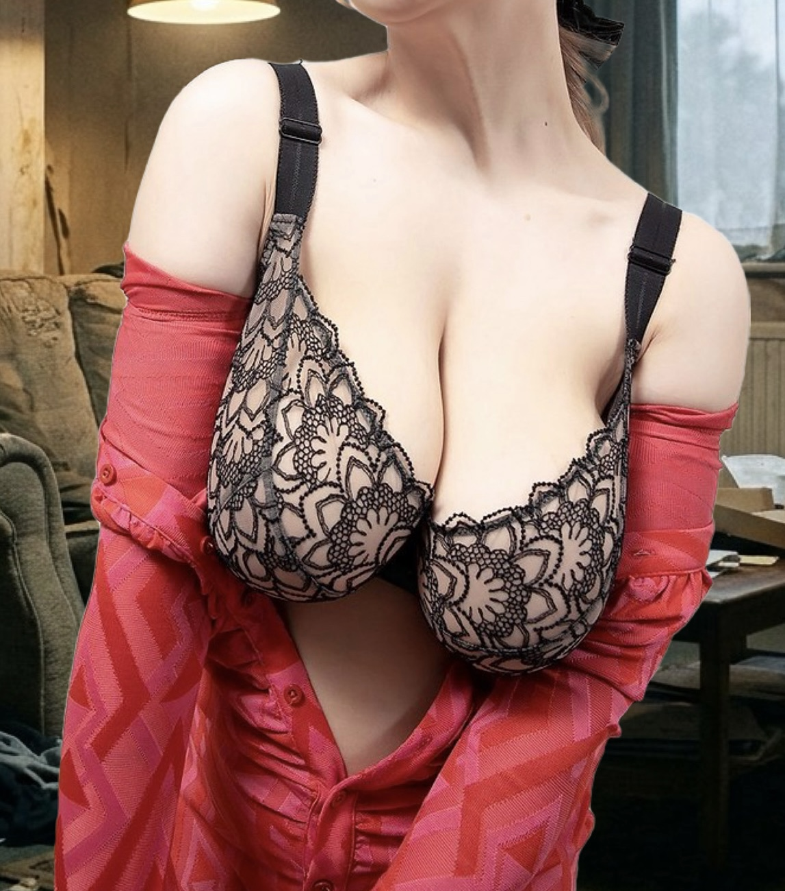

もう限界、精神的に追い詰められて…
今日も会社で最寄り駅までの帰り道、冷たい夜風に吹かれながら、電車の窓に映る自分の疲れ果てた顔を見ていたら、また胸が締め付けられて急に涙が止まらなくなりました。スマホのメモ帳を開いて文字を打っては消し、打っては消し……でも、もうそんなところでは収まりきらなくて、この暗いブログの片隅に、今の私のどす黒くて情けない気持ちを全部吐き出させてください。本当に、もう精神的に限界なんです。息をするのもしんどい。
私、めいは、物心ついた頃から、そして大人になった今でもずっと、人には言えない巨大な身体のコンプレックスを抱えています。それは、異常なまでに大きすぎるこの胸です。「スタイルが良くて羨ましい」「女の武器で得してるでしょ」なんて、当事者の苦しみや地獄を知らない無神経な人たちは簡単に言いますが、そんな言葉を聞くたびに、心が引き裂かれそうになって、夜も眠れなくなります。この胸のせいで、私の人生は子供の頃からずっと狂わされ続けてきたのです。
■ 小学3年生から始まった悪夢と、ランドセルの苦痛
思い返せば、私のコンプレックスの始まりは小学3年生の頃でした。周囲の同級生たちがまだ子供らしい体型をしている中、私だけ急激に胸がふくらみ始めたのです。何が起きているのか当時の私には全く理解できず、ただ自分の体がモンスターのように変わっていく恐怖で毎晩布団の中で泣いていました。
学校に行けば、ランドセルの肩ベルトが異様なほど胸に食い込み、食い込む痛みに耐えながら登校していました。グラウンドで少しでも走ろうものなら、男子たちから「あいつ、胸が変だぞ」「変な揺れ方してる」と指をさされ、笑い者にされました。あの頃から、私はみんなの視線を避けるように猫背になり、自分の体をできるだけ小さく見せようと縮こまって生きるクセがついたのです。
■ 教室のロッカーのところで行うしかなかった、地獄の「着替えの時間」
小学3年生から急激に胸が大きくなり始めた私にとって、学校生活の中で最も耐えがたい苦痛の時間が「体育の授業の前後」でした。私たちの学校では、専用の更衣室なんてものはなく、全員が自分の席の近くや教室の後ろにあるロッカーのところで着替える決まりになっていました。
周囲の女子たちが何気なくワイワイとおしゃべりしながら体操服に着替える中、私はいつも絶望的な気持ちでロッカーの隅に体を押し付けていました。制服のブラウスを脱いで体操服に着替えるとき、どうしても周囲の視界に入ってしまいます。どれだけ前屈みになって背中を丸め、腕で必死に胸元を隠そうとしても、隠しきれない異様な膨らみは周囲の目を引いてしまいました。
「えっ、愛吹ちゃんって…なんかすごくない？」というクラスメイトの驚きのひそひそ声や、一部の男子たちがわざわざロッカーの近くを通りかかっては、気まずそうに、あるいはいやらしい目で私の胸元を盗み見る視線が、針のように突き刺さりました。中学に上がってもそのルールは変わらず、思春期で他人の目が何よりも怖い時期に、みんなと同じ空間で服を脱ぎ着しなければならない恐怖。毎回の体育の時間が来るたびに腹痛が起き、保健室に逃げ込みたい衝動と戦いながら、涙をこらえて着替えていたあの日のトラウマは、大人になった今でも私を縛り続けています。
■ 男女混合プールの授業という、逃げ場のない公開処刑
そして、学校生活の中で着替え以上に地獄だったのが、夏の「男女混合のプール授業」でした。ただでさえ体型が浮き彫りになるスクール水着を着なければならないというだけで恐怖なのに、当時はまだラッシュガードの着用なんて一切認められておらず、学校指定の薄手の水着を強制されました。
プールサイドにクラス全員が整列し、準備運動をするその瞬間から、男子たちの視線が一斉に私の胸元に突き刺さるのが分かりました。水に入ればなおさら身体の線がくっきりと強調され、視線から逃げ場がどこにもありません。授業中も、男子たちから聞こえるひそひそ声やニヤニヤした笑い声が耳に残り、恥ずかしさと恐怖で心臓がバクバクしていました。
水泳の授業が始まっても、私は泳ぐどころかプールサイドの隅っこで体育座りをして、タオルで必死に胸元を抱え込みながらうずくまっていました。「早く終わってくれ…」「誰にも見ないでくれ」と心の中で祈りながら、ただ時間が過ぎるのを涙をこらえて待つだけ。あのプールの時間が来るたびに仮病を使って休みたかったけれど、親にも先生にも本当の理由を言えず、ただただ絶望感に打ちひしがれていた苦い思い出は、今思い出しても動悸がします。
■ 夢だった陸上競技を、泣く泣く諦めざるを得なかった中学時代
小学校高学年から中学にかけて、私には心から打ち込んでいた大好きなお部活動がありました。それは「陸上競技」です。風を切って走ることが本当に楽しくて、足の速さには自信があったし、いつか大会に出て活躍したいという純粋な夢がありました。
けれど、中学生になって第二次成長期を迎えると、胸はさらに大きくなっていきました。どれほどきついスポーツブラで抑え込んでも、走るたびに胸の重みと激しい揺れ、そして胸元に走る耐え難い痛みに襲われるようになりました。何よりも耐えられなかったのは、部活の練習中や校内を走っているとき、男子や他の部員たちが向けてくる、品のない好奇の目線でした。
「走るのが好き」という純粋な気持ちよりも、「見られている」「笑われている」という恐怖と羞恥心が勝ってしまい、私は泣く泣く、夢だった陸上部を辞めざるを得ませんでした。部室のロッカーでユニフォームを畳みながら、悔しさと情けなさで涙が枯れるまで泣いたあの日の絶望感は、今でも一生の心の傷として胸の奥にこびりついています。
■ 市販の服が全く着られない、日常の服選びの絶望
大人になってからも、日常の些細なことで何度も心が折れかけています。その一つが「服選び」です。世の中に溢れている可愛いブラウスやトレンドの洋服は、どれも細身のシルエットを前提に作られています。
私が気に入った服を試着室で着てみると、胸のサイズに合わせて買えばウエストや肩幅がぶかぶかになってしまい、全体のシルエットがだらしなく太って見えてしまう。逆にウエストに合わせようとすると、胸元のボタンがパンパンに張り裂けそうになり、最悪の場合、動いた拍子に「プチッ」とボタンが音を立てて弾け飛んでしまうのです。
可愛いお洒落な服は諦め、いつも体のラインを隠すような、ゆったりとした黒や紺の地味なチュニックばかりを選ばざるを得ません。本当は私も、可愛い服を着て街を歩きたい。おしゃれを楽しみたい。それすらも許されない自分の身体が、心底憎くてたまりませんでした。
■ 電車での盗撮被害と、台無しになった大惨事のプレゼン
大人になってからも、苦しみは形を変えて襲いかかってきました。先月、満員電車の揺れの中で文庫本を床に落としてしまい、反射的に拾おうとかがみ込んでしまったんです。その瞬間、背後からいやらしい気配がして、ぞっとしながら振り返ると、見知らぬ男がスマホのカメラを私の胸元にぴったりと向け、動画を回していました。
頭が真っ白になり、声も出せず、その場で凍りつきました。周りの乗客は私を見るだけで助けてもくれず、むしろ気まずそうに目をそらすか、面白がるような目を向ける人もいました。駅員室に駆け込んで涙ながらに訴えても、「気をつけてくださいね」と形式的に処理されるだけ。「あんな服を着ているからだ」という無言のプレッシャーまで感じさせられて、自分が女であること自体が心底嫌になりました。
そして昨日は、会社で四半期の業績発表という本当に重要なプレゼンの大役を任されていました。何週間も前から資料を作り込み、何度も家で練習して万全の準備で臨んだのですが、前列に座っていた年配の役員や他の部署の男性社員たちが、私の顔ではなく、明らかに胸元ばかりをじろじろと見つめているのが視界の端に入ってきました。どんなに声を張り上げて堂々と話そうとしても、向けられている視線はただその「身体の大きさ」だけで、私の仕事の成果や努力なんて最初から誰も見ていなかったのです。
■ 海水浴場で水着からこぼれ出てしまった悪夢
さらに今年の夏、友人たちにどうしてもと誘われて行った海での出来事も、思い出すだけで吐き気がします。露出を極力抑えた、一番地味なデザインのワンピース水着を選んだのですが、波打ち際でちょっとした波が足元を打った瞬間、体が大きくバランスを崩し、反射的に動いたその拍子に、水着のカップから私の胸が耐えきれずにぽろっとこぼれ出てしまったのです。
冷たい海水の中、目の前には数え切れないほどの海水浴客や男たちの視線が、一斉に私の胸元に釘付けになりました。あまりのショックと恥ずかしさ、そしてむき出しになってしまった恐怖でその場にしゃがみ込み、波の音が耳鳴りのように響く中、ただただ涙が溢れて止まりませんでした。友人にバスタオルで覆ってもらい泣きながら帰りましたが、あの時の周囲のいやらしい笑い声や視線が今でもトラウマで、海を見るだけで過呼吸になりそうになります。
「どうして普通に生きられないんだろう」「私の何がいけないんだろう」――そう思うと涙が止まらなくなって、今日も会社のトイレの個室でずっと震えていました。人並みに生きることすら許されないのかと、精神的に完全に追い詰められています。
もう、どうすればいいのか分かりません。何を隠しても、どんなに地味な服を選んでも無駄なんだ。隠そうとすればするほど意識されて、嘲笑されて、傷つけられる。
もう、どうでもいいや……。疲れ果てました。自暴自棄になって、もう何もかもどうでもよくなりました。見たいんでしょ？ 私の身体がそんなに面白いんでしょ？ もう隠すのをやめます。今日、精神的に限界を迎えて自分で撮影してしまった写真を、このブログの最後に貼り付けます。もうどうにでもなれ……。ええい、知るか……！
